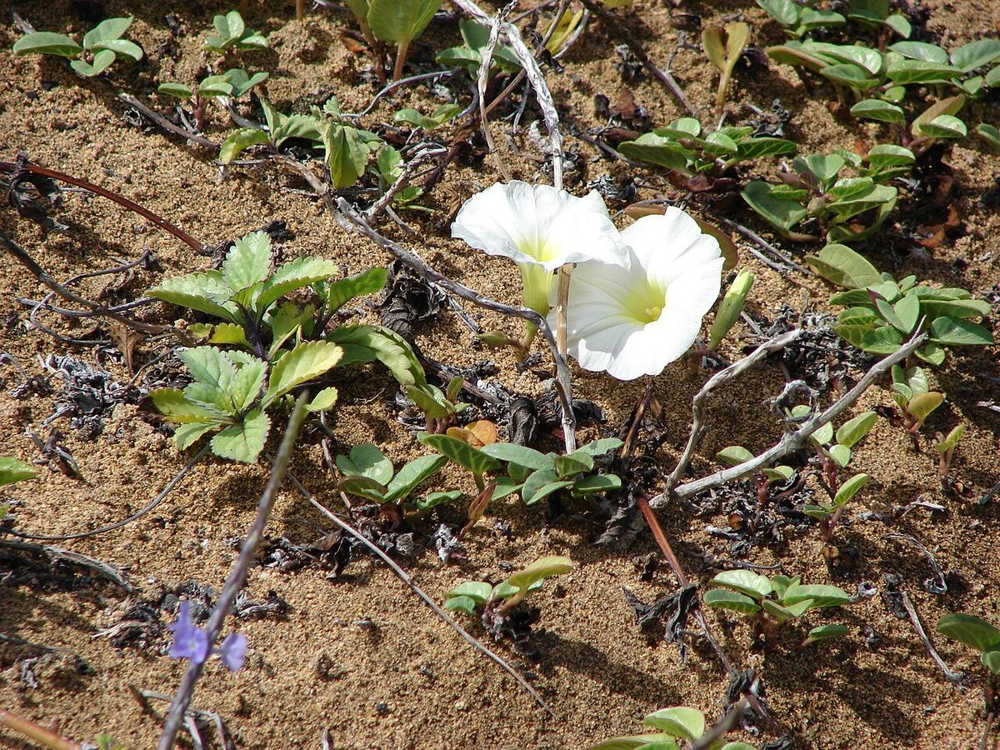
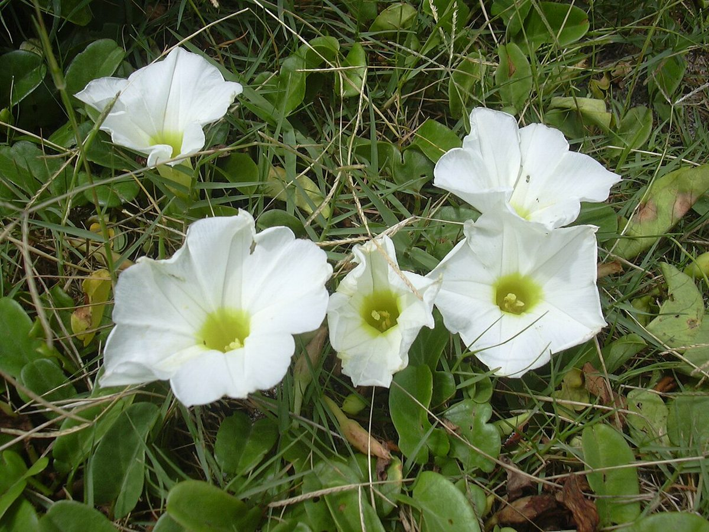
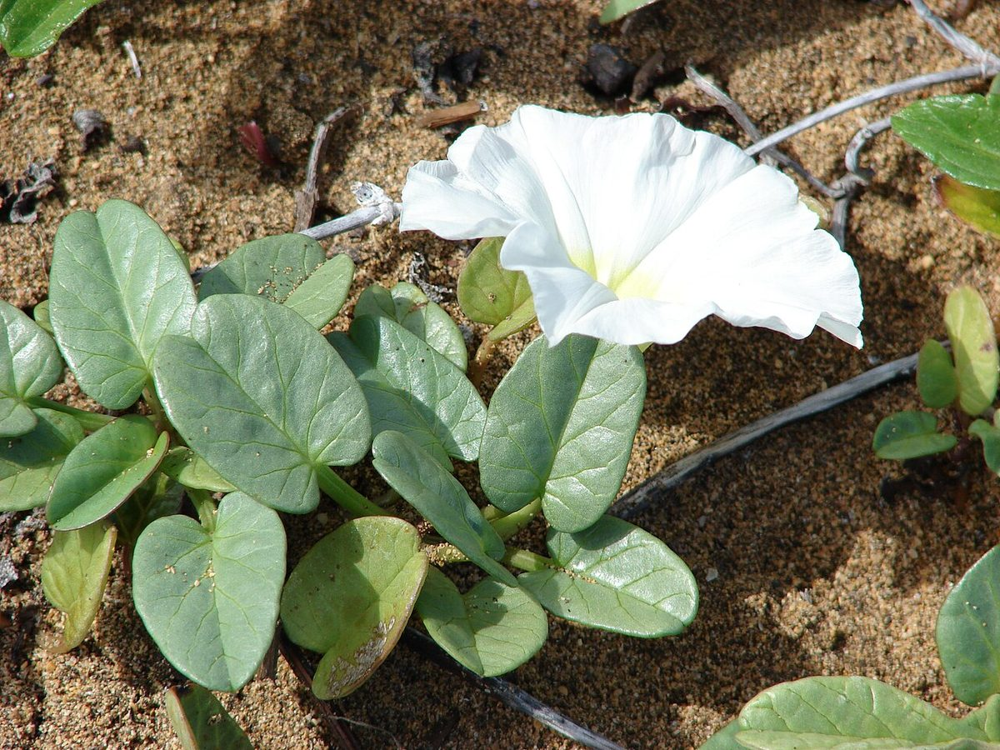

COMMON Beach strand Dune
Ipomoea imperati
hunakai · beach morning-glory (white), sea foam morning-glory



Quick facts
| Family | Convolvulaceae |
|---|---|
| Scientific name | Ipomoea imperati |
| Hawaiian name(s) | hunakai |
| English name(s) | beach morning-glory (white), sea foam morning-glory |
| Status | Indigenous (native, non-endemic) |
| Conservation | — |
| Coastal zones | Beach strand Dune |
| Occurrence | A prostrate strand vine of open sandy beaches and low fore-dunes. On the roadless Kauaʻi coast it occurs alongside pōhuehue at Miloliʻi, Kalalau, and on stabilized sand at Māhāʻulepū, but is much less common than pōhuehue. Pantropical. |
How to identify
- Growth form
- Prostrate trailing mat-vine with long slender runners that root at nodes and creep across bare sand; rarely twining.
- Size
- Runners 1–5 m long; leaves at ground level.
- Leaves
- Alternate, and — critically — highly variable on the SAME plant, ranging from entire ovate through shallowly 3-lobed to deeply 3–5-lobed on the same runner. This within-individual leaf polymorphism is the single strongest field cue.
- Flowers
- White (occasionally very pale pink) funnel-shaped, 3–5 cm across, with a pale yellow throat. Open in morning, closed by early afternoon.
- Fruit / seed
- Small dry brown capsule, ~1 cm, containing a few hairy black seeds that float on ocean currents.
- Bark / stem
- Slender green fleshy stems, rooting at nodes.
- Where it sits on the coast
- Bare to lightly stabilized sand at and just above the tideline, typically the outermost belt of vegetation. Not on rocky sea cliff.
Clinchers (features that lock the ID)
- WHITE funnel flower (versus pōhuehue's magenta) with a pale yellow throat.
- Leaves on a single plant vary from entire ovate to deeply 3–5-lobed — check several leaves on one runner.
- Prostrate rooting runners in bare beach sand, not twining or climbing.
Look-alikes
- Ipomoea pes-caprae (pōhuehue) — Pōhuehue has BRIGHT MAGENTA flowers and uniformly two-lobed "goat's foot" leaves that never show the entire-to-lobed variation of hunakai. If in doubt, check flower colour first, leaf polymorphism second.
- Ipomoea indica (blue morning-glory, introduced) — A large twining vine of inland gardens and forest edges, with larger blue-purple flowers and hairy stems; not a prostrate strand vine.
- Calystegia soldanella (introduced beach false-bindweed) — Reniform (kidney-shaped) leaves with a broad notched base, pink flowers, and a stouter creeping habit; not present as an established coastal weed on Kauaʻi but sometimes confused in photographs.
Ecology
Salt-water-tolerant strand pioneer with ocean-buoyant seeds, which accounts for its near-global tropical shoreline range. Runners stabilize the outer belt of loose beach sand and initiate low-dune formation. In many Hawaiian strand systems it coexists with pōhuehue in mixed mats. [16], [21], [22], [27]
Cultural significance
Hunakai is less prominent in Hawaiian cultural record than pōhuehue, its more conspicuous magenta-flowered congener. The Hawaiian name "hunakai" (sea foam) refers to the white flowers scattered along the sand.